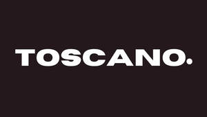

Trade Mark Journal No.2025/050 12 December 2025
UK00004302096 27 November 2025 (9,14)

- Class 9
- Sunglass lenses; Sunglass temples; Sunglasses; Magnetic clip-on sunglass lenses; Sunglass cords; Sunglass cases; Lenses for sunglasses; Eyewear; Clip-on sunglasses; Optical lenses for use with sunglasses; Optical lenses for sunglasses; Fashion sunglasses; Cases for eyeglasses and sunglasses; Frames for sunglasses; Sunglasses frames; Prescription sunglasses; Sunglass nose pads; Frames for spectacles and sunglasses; Eyewear pouches; Straps for sunglasses; Eyeglass lenses; Glasses, sunglasses and contact lenses; Lenses for eyeglasses; Prescription eyewear; Eyeglasses; Optical lenses for eyeglasses; Cases for spectacles and sunglasses; Protective eyewear; Sports eyewear; Fashion eyeglasses; Covers for sunglasses; Chains for spectacles and for sunglasses; Chains for spectacles and sunglasses; Cases for sunglasses; Chains for sunglasses; Frames for eyeglasses; Protective eyeglasses; Cords for sunglasses; Corrective eyewear; Eyeglasses for sports; Eyeglass frames; Lenses for glasses; Prescription eyeglasses; Eyewear cases; Cases for eyewear; Anti-glare glasses; Nose pads for eyewear; Optical lenses for spectacles; Sunglasses for pets; Magnifying eyeglasses; Eyeglass lanyards; Frames for eye glasses; Lenses for spectacles; Replacement lenses for glasses; Anti-glare visors; Plastic lenses; Eyeglass temples; Glacier eyeglasses; Boxes [cases] for sunglasses; Ski glasses; Glass ophthalmic lenses; Optical glasses; Eyeglass shields; Anti-glare spectacles; Antiglare glasses (anti-glare); Anti-reflective lenses; Optical lenses; Lenses (Optical -); Chains for eyeglasses; Spectacles [glasses]; Eye glasses; Anti-dazzle spectacles; Glasses frames; Frames for glasses; Antireflection coated eyeglasses; Ophthalmic lenses; Prescription glasses; Protective glasses; Cases for eyeglasses; Glasses; Sports glasses; Glasses for sports; Smart phones in the form of eyewear; 3D eye glasses; Selfie lenses; Monocle frames; Cords for eyeglasses; Eyeglass cords; Silicone nose pads for eyeglasses; Eyeglass chains; Chains (Eyeglass -); Sports training eyeglasses; Sun glasses; Frames for spectacles; Magnifying lenses; Eyeglass cases; Cases (Eyeglass -); Goggles; Magnifying glasses [optics]; Monocular frames; Camera goggles; Fashion spectacles; Goggles for use in sports; Goggles for sports; Sports goggles; Sports (Goggles for -); Ski goggles; Shooting glasses [optical]; Prescription spectacles; Side guards for eyeglasses; Protective goggles; Camera lenses; Protective visors; Visors [protective]; Anti-dazzle shades; Motorcycle goggles; Sight glasses [optical]; Prescription goggles for swimming; Smartphone camera lenses; Lens; Spectacle lenses; Smart glasses; Spectacle glasses; Magnifying glasses; Corrective glasses; Lenses for protective face shields; Children's eye glasses; Visors for helmets; 3-D glasses; Glasses cases; Protective suits for aviators; Aviators (Protective suits for -); Waling glasses; Protective spectacles; Spectacles; Reading glasses; Dustproof glasses; Covers for glasses; 3D glasses; Opera glasses; Theatre glasses; Safety glasses for protecting the eyes; Colour blindness correction glasses; Optical viewing glasses [peep holes] for doors; Color blindness correction glasses; Cyclists' glasses; Sports' glasses.
- Class 14
- Watch winders; Watch dials; Watch straps; Watch glasses; Watch bracelets; Watch movements; Watch hands; Watch fobs; Watch faces; Watch boxes; Watch crystals; Watch clasps; Watch bands; Watch parts; Watch pouches; Watch crowns; Watch casings; Watch chains; Chains (Watch -); Watch cases; Clock and watch hands; Watch and clock hands; Watch springs; Springs (Watch -); Wrist watch bands; Watch cases [parts of watches]; Anchors [clock and watch making]; Dials for clock and watch making; Dials [clock and watch making]; Watch boxes [presentation]; Watch and clock springs; Pendulums [clock and watch making]; Barrels [clock and watch making]; Watches; Leather watch straps; Stop watches; Watch straps of plastic; Non-leather watch straps; Watch straps of nylon; Hands (Clock -) [clock and watch making]; Clock hands [clock and watch making]; Metal watch bands; Pendants for watch chains; Wrist watches; Metal expanding watch bracelets; Mechanical watch oscillators; Sports watches; Wristlet watches; Watches for sporting use; Quartz watches; Chronographs for use as watches; Dials for watches; Straps for watches; Chronographs as watches; Chronographs [watches]; Dress watches; Watch straps of polyvinyl chloride; Watch straps of synthetic material; Wrist straps for watches; Straps for wrist watches; Table watches; Jewellery boxes and watch boxes; Diving watches; Watches for outdoor use; Pocket watches; Bands for watches; Faces for watches; Bracelets for watches; Pendant watches; Clocks and watches; Watches and clocks; Presentation boxes for watches; Alarm watches; Automatic watches; Parts for watches; Silver watches; Cases for watches [presentation]; Movements for clocks and watches; Movements for watches and clocks; Watches for nurses; Chains for watches; Watches containing a game function; Electric watches; Solar watches; Women's watches; Cases for watches; Watch straps made of metal or leather or plastic; Divers' watches; Oscillators for watches; Electronic watches; Mechanical watches; Watches made of gold; Clocks and watches for pigeon-fanciers; Cases for watches and clocks; Clocks and watches, electric; Fittings for watches; Platinum watches; Digital watches with automatic timers; LED finger ring watches; Housings for clocks and watches; Bracelets and watches combined; Wristwatches with pedometer feature; Cases adapted for holding watches; Wristwatches; Timepieces; Chronographs for use as timepieces; Cases [fitted] for watches; Watches bearing insignia; Parts and fittings for watches; Electronically operated movements for watches; Straps for wristwatches; Watches made of precious metals; Cases of precious metals for watches; Electrically operated movements for watches; Watches made of plated gold; Mechanical watches with manual winding; Mechanical watches with automatic winding; Watches made of rolled gold; Wristwatches with pedometers; Dials for clock and watch-making; Dials [clock- and watchmaking]; Dials for clock- and watchmaking; Watches incorporating a telecommunication function; Dials for horological articles; Dials for clocks; Watches incorporating a memory function; Watchbands; Cases adapted to contain watches; Clocks having quartz movements; Dials (clockmaking and watchmaking); Horological instruments having quartz movements; Electrical timepieces; Oscillators for timepieces; Electronic timepieces; Quartz clocks; Watches made of precious metals or coated therewith; Watches with the function of wireless communication; Watches with wireless communication function; Electric timepieces.
Vincenzo Toscano